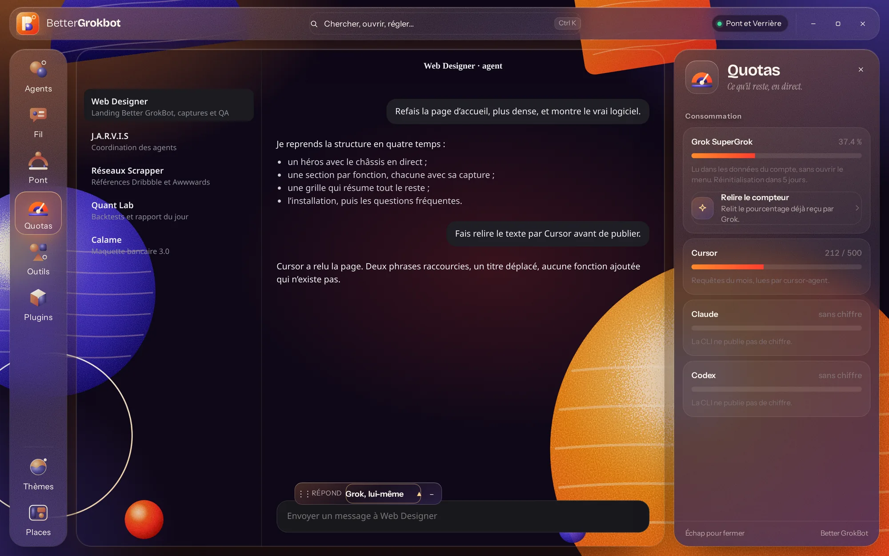
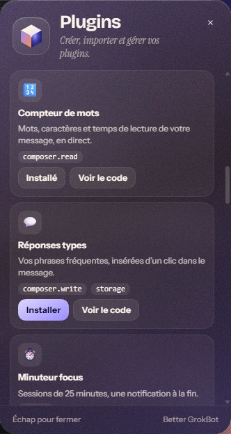
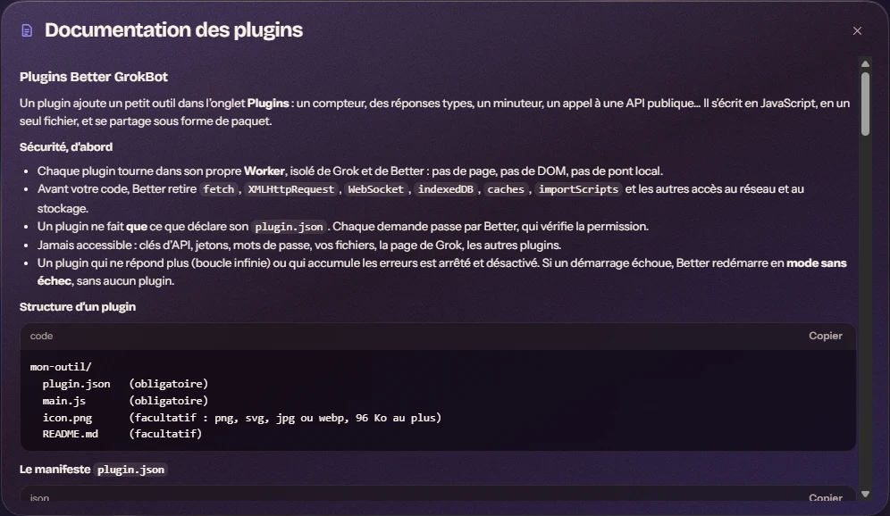
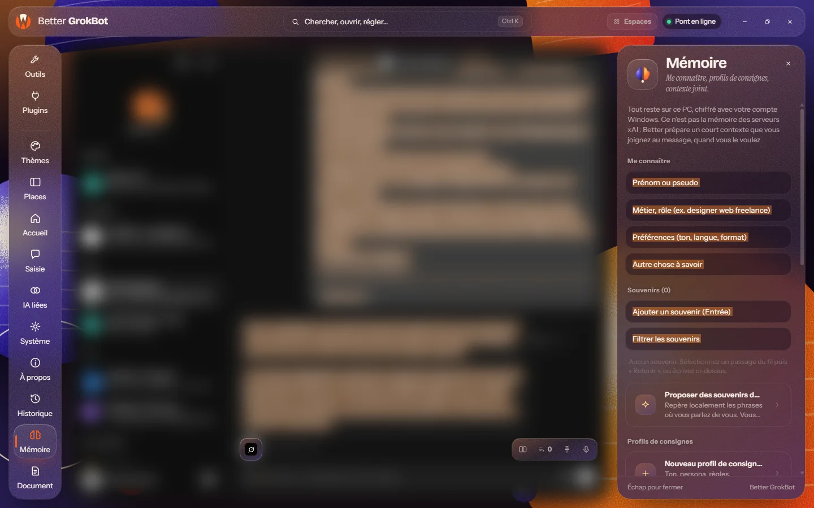
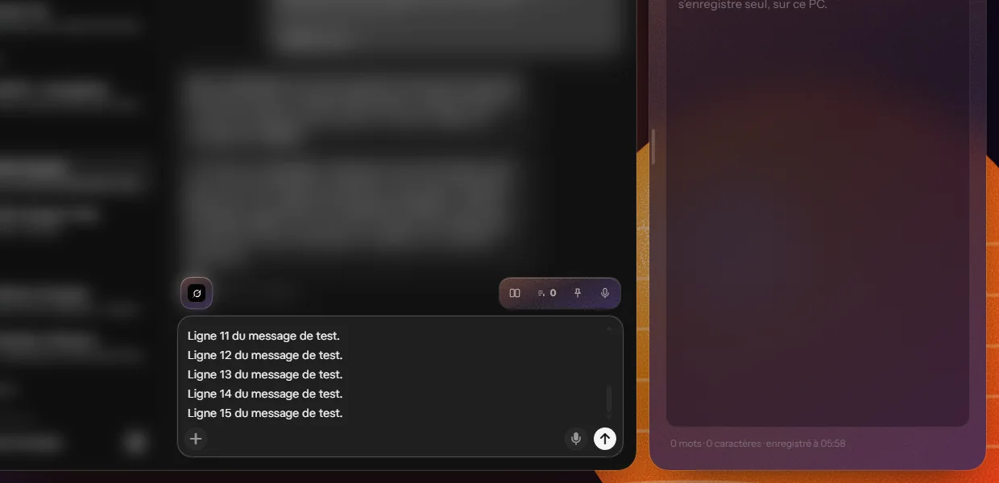
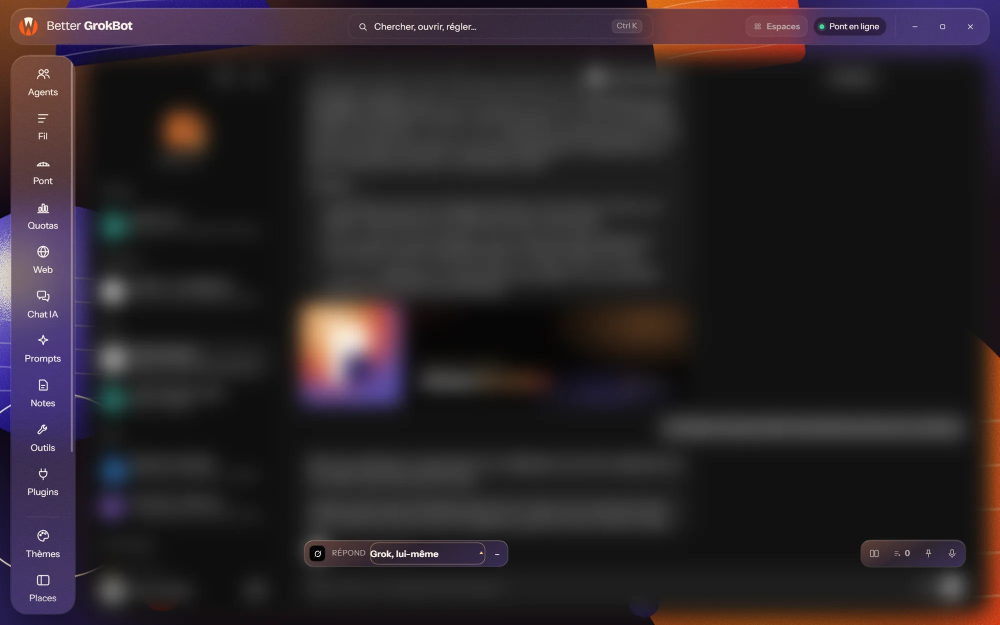
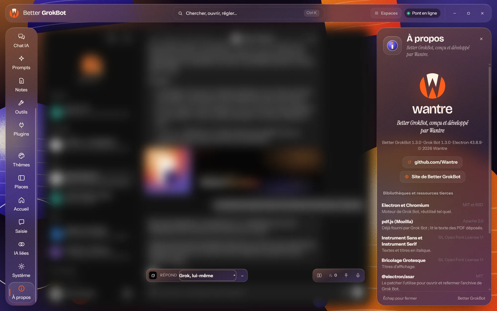
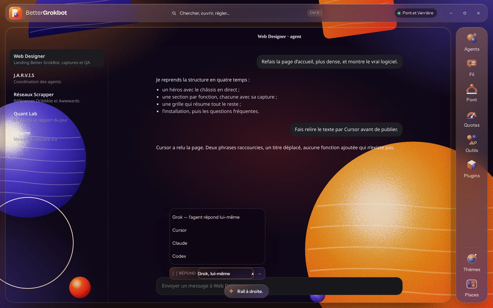
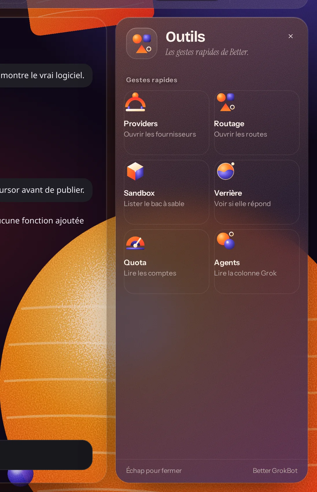
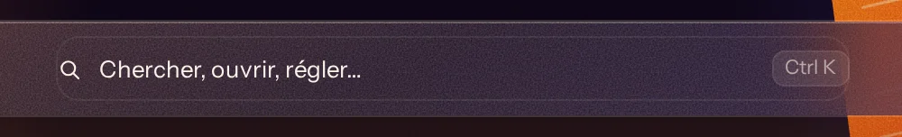

A plugin creator
Start from a model, name your tool: the identifier is filled and checked during entry. Icon, version, permissions explained, editor and live preview. Ctrl Entrée
Better GrokBot is a private copy of Grok Bot. It adds a navigation rail, a AI Chat and a web browser next to the conversation, a Ctrl K palette, the Reply bar for sending a message to Cursor, Claude or Codex, live quotas and updates that install on their own. The original installation still remains intact.





Grok Bot.exe and app.asar are read in Programs\Grok Bot. Nothing is written there.
The copy installs in Local\GrokBot-inprocess. The archive is reconstructed there with the frame.
The window that opens is Better GrokBot. Your original Grok Bot remains there, as is.
Dock any open window on your PC: it takes Grok’s place and stays usable. AI Chat can see it only if you turn that on (Cursor, Claude or Codex): each message then carries a snapshot of that window. A new “Connect account” button links your providers, and the rail can be reordered by drag and drop.
Better speaks French, English, Spanish, German, Italian, Portuguese, Dutch and Polish, and follows the language of Windows. The plugins each run in an isolated space, with clear permissions, a creator, a gallery and packages to drag onto the window. Actual screenshots from 1.5.
Start from a model, name your tool: the identifier is filled and checked during entry. Icon, version, permissions explained, editor and live preview. Ctrl Entrée

Each plugin runs in its own Worker and only does what it declares. Never your keys, tokens or files.

Word counter, standard answers, focus timer, keyless weather, conversation in Markdown. One click to install.

The language of Windows on first launch, to be changed in System. Dates and numbers follow.

Drag a folder, .zip or .bgbplugin: manifest checked, permissions shown, confirmation, "Restart now".
A history where everything can be searched, an encrypted memory that remains on the PC, projects linked to GitHub, a Document side panel and reading aloud. Actual screenshots from 1.4; the conversation Grok is blurred.

First name, profession, preferences, memories and locker profiles in an encrypted safe with your Windows account. Better prepare a short context that you attach to the message, only when you want.

Search all indexed conversations, automatic titles, folders, tags and archive. Ctrl Maj F

A writing side panel with preview, search and editing by Grok. Save in .md, .txt or PDF. Ctrl Maj O

Select a passage: quote it, remember it, read it aloud, send it to the Document or continue from here with another agent.

The circle “Reply” and the right bar remain 8 px above the field, even with long text, an attached image or a narrow window.
Versions 1.1 to 1.3 add a chat sidebar for linked AIs, a web browser with item selection, a stowing and scrolling rail, and comprehensive updates. Actual screenshots from 1.3; the Grok conversation is blurred.
Talk to Cursor, Codex, Claude Code or a local AI in a side panel next to Grok. Choice of model with logos, conversations kept on the PC, Markdown and code to copy, side by side comparison. Nothing goes to Grok without your click. Ctrl Maj A

An open page next to the conversation. The selector sends an element, its text and its image to the input field, or the entire page to Markdown. Ctrl Maj E

The map remains fixed above the input field, with grain. The list shows the logos, separates ready AIs from those to be linked, and is filtered using the keyboard.

The name remains under each icon in Simple mode, never in Compact. Pin, mount, hide; the rail scrolls with a thin bar that does not take up space.

Download, sha256 imprint, close, patch and relaunch, under a transitional veil. Optionally, the update waits for a quiet moment and warns 60 seconds before. The previous version remains kept.
The About page brings together the version, links and third-party libraries with their licenses. Better GrokBot is an independent project.

Same Grok, same conversation, same agents. The frame sits around: a clean title bar, a picture rail on the left, and panels that slide in from the right.
The rail remains visible while you write. Each entry opens its panel without leaving the conversation, and Esc closes it.
Change palette
The palette brings together the eight categories, the three color palettes and the conversation gestures. Type two letters, Enter opens the correct line.

The Reply bar is placed just above the input field. Choose Cursor, Claude or Codex: your agent Grok keeps the floor and entrusts the work to the chosen model.
ask_external_ai of connector Better GrokBot.The Bridge panel shows the state of the local server, the providers found on this PC, and the model assigned to each agent.
route_for_agent.
The percentage Grok is read from the data that the account is already sending, without opening billing. The reset date follows.

Grok remains the agent who speaks to you. The other AIs come to help him, only when you decide.
Choose a palette here: the capture changes, and so does this page. In the application, the grain, the decoration and the movement are regulated separately.
#better-grokbot-root.

Layout, plugins, conversation, quick gestures, connector. Each card shows the actual screen.

Compact: 92 px rail and 332 px panel. Comfort: 108 px and 388 px. Drag a rail entry to change its order.

Show or hide a rail entry. A plugin can also target the center CSS, where the conversation takes place.

Resume conversation places the cursor in the dialer. Share opens the share of Grok, otherwise copies the agent name.

Six quick moves: suppliers, routing, sandbox, Canopy, quota and agent column.
To let your Grok agents see the Better tools, add this command to Connect apps.
BetterGrokBot.exe -mcpask_external_aiassigns a request to the routed modelsandbox_listlist the sandbox


Logo, search Ctrl K, bridge status badge and window buttons. The native bar of Windows disappears.
Shapes, logo and signature when opening. Animations cut off in Themes, and the system animation reduction setting is respected.
Programs\Grok BotA single file: Patch GrokBot retrieves the latest version, checks its fingerprint, closes Grok Bot, keeps the current version for rolling back, applies the patch and restarts. The “Update” button of the app goes through it. Uninstall removes the copy, never Grok Bot.

Patch-GrokBot.exe, always the latest version. Windows may display SmartScreen because the file is not signed: "Additional information", then "Run anyway".What copy does, and what it doesn't do.
No. Patch GrokBot reads Programs\Grok Bot without writing. Everything that changes lives in the copy, in Local\GrokBot-inprocess.
Not for CLI bridges: if Cursor, Claude, Codex, Gemini, Copilot or OpenCode are installed and connected to this PC, Better uses them as is. For a keyed provider, the stuck key remains encrypted.
It is not offered. The Bridge panel shows it as absent, with a button to bind it as soon as it is installed.
It gives your agents Grok the tools of Better, including ask_external_ai. Without him, the Reply bar cannot entrust work to another model. The command is copied from the Bridge panel.
The percentage Grok is read from the data the session is already receiving. For linked bridges, the gauge appears when the CLI publishes a number, otherwise the map indicates it.
No: Grok does not allow clearing history in the cloud, and Better does not claim to do so. Resume the conversation simply places the cursor in the dialer.
Yes, in Themes, with Animations. The grain and geometric decoration are cut separately. The animation reduction setting of Windows is respected.
No. It is under proprietary license Wantre, all rights reserved: downloading and personal use are free, but redistribution, modification, resale or reuse of the code and the brand require the written consent of Wantre.
On the server Discord Better GrokBot.
Open Patch GrokBot and click Uninstall. The copy is removed. Grok Bot, he is not affected.
Better GrokBot is under proprietary license Wantre — all rights reserved. Free download and personal use. Redistributing, modifying, decompiling to make a derivative work, reselling or reusing the code or trademark requires the written consent of Wantre. The software is provided as is, without warranty. Independent project, not affiliated with xAI, X or Grok Bot; their brands belong to their owners.
A private copy, which can be removed in one click, which leaves the original intact.
Windows, .NET 8, WebView2 and Node.